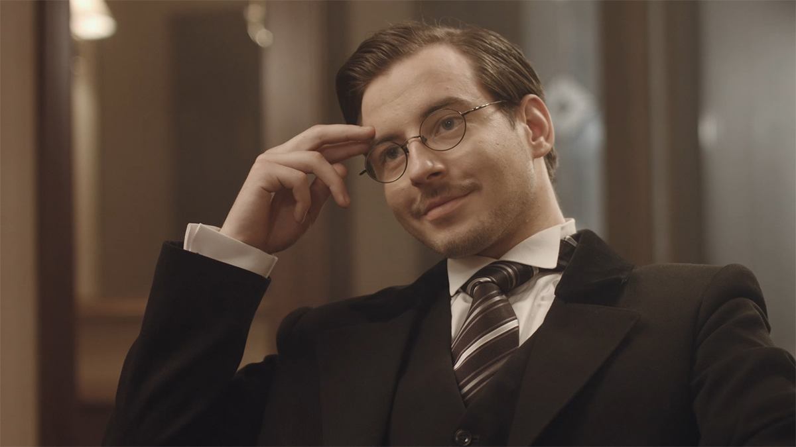
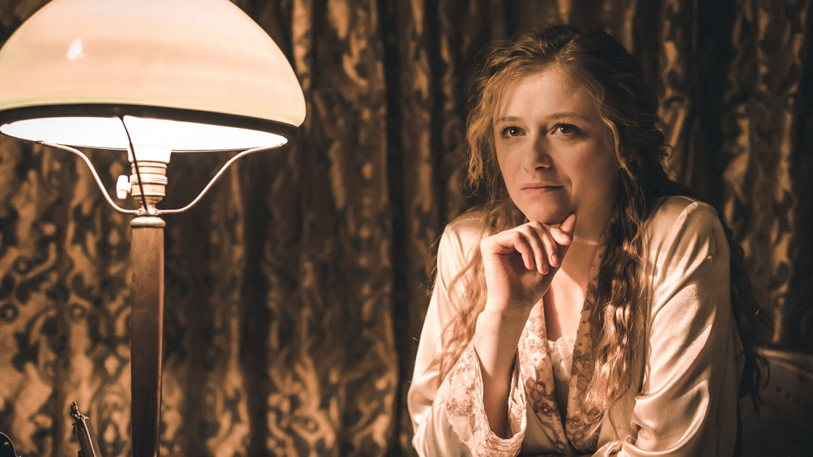
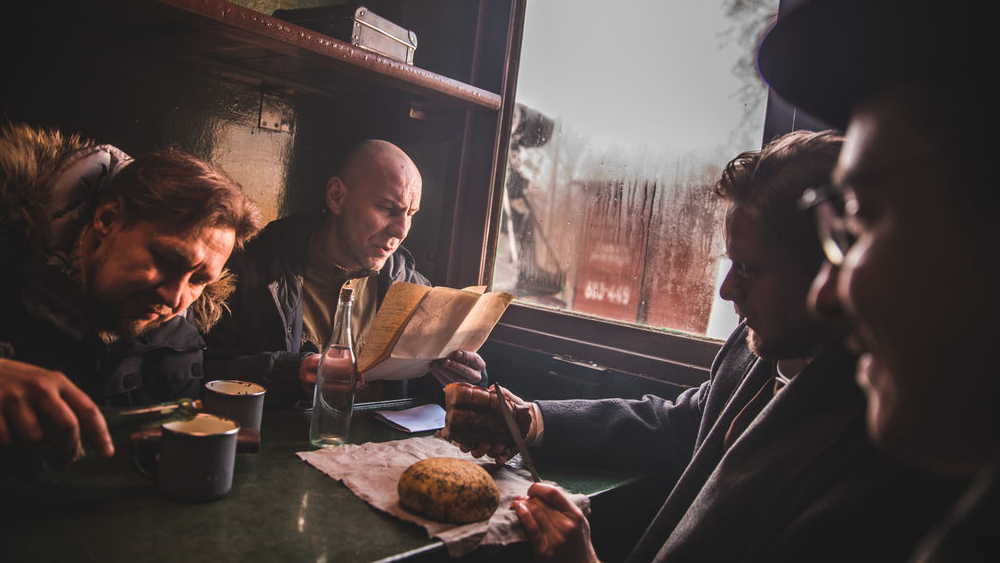

Director
Talivaldis Margevics
Writer
Talivaldis Margevics
Producers
Ildze Felsberga, Dace Siatkovska
Cinematographer
Aleksandrs Grebnevs
Music
Martins Brauns
Editors
Gunta Ikere, Olegs Aleksejevs
Sound
Jevgenijs Kobevs
Zigfrids Anna Meierovics (2018)
documentary, Latvia, 48'
An investigative look at the life of Latvia’s first foreign minister Zigfrids Anna Meierovics is also a chronicle of the inception of the statehood of Latvia. In a time of deep political turmoil, one man had to make the choices and sacrifices necessary to achieve the legitimacy of an entire country.


scroll for more >